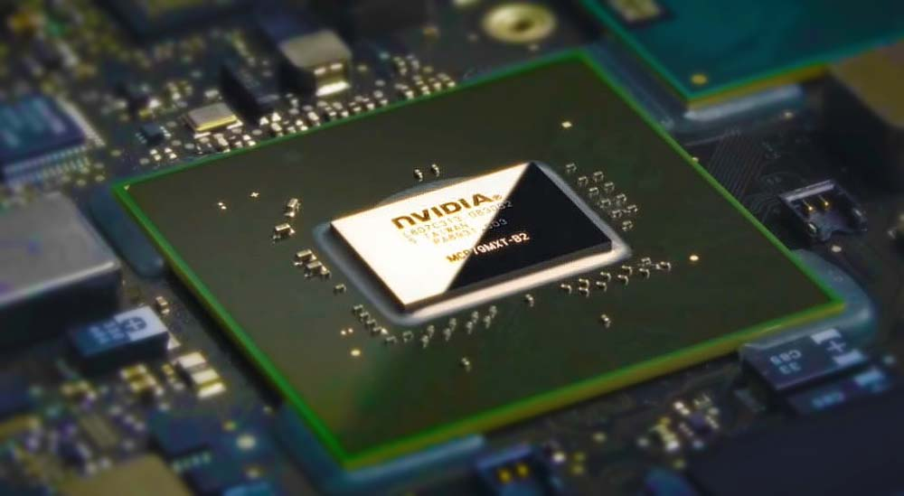
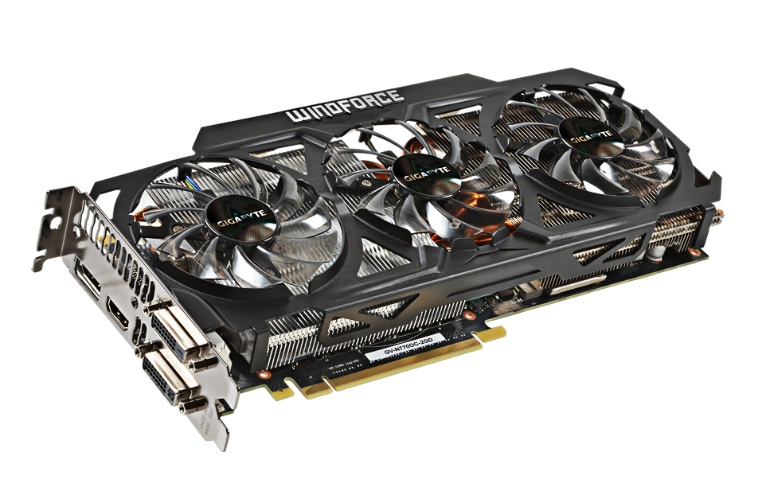

Видеодрайв
Главная
-
NVIDIA Graphics cards
-
AMD Graphics cards
-
Отзывы и пожелания
-
Калькулятор стоимости
-
Зарегистрироваться
-
Личный кабинет
Характеристики видеокарт
Видеокарта – один из основных компонентов компьютера. Она отвечает за обработку графики и вывод изображения на экран монитора. Поэтому при выборе видеокарты очень важно обращать внимание на ее характеристики. Поскольку именно от характеристик видеокарты зависит, сможет ли она удовлетворить все требования пользователя.
В данной статье мы рассмотрим основные характеристики современных видеокарт. А также расскажем о том, как использовать эту информацию для того чтобы не ошибиться при выборе видеокарты.
Графический процессор (чип)
Первое на что следует обратить внимание при выборе видеокарты это графический процессор. От модели графического процессора зависят все остальные характеристики видеокарты. Компания NVIDIA называет свои графические процессоры следующим образом: GeForce GTX 123, где 123 – это числовое обозначение, которое указывает на положение данного графического чипа в линейке видеокарт от NVIDIA. Первая цифра (1) указывает на поколение видеокарты. На данный момент последним поколением видеокарт является GeForce GTX 7xx. Вторая (2) и третья (3) цифры указывают на положение данного графического чипа в линейке видеокарт текущего поколения. Чем больше цифры 2 и 3 тем более высокого уровня данная видеокарта. Таким образом, видеокарта GeForce GTX 1080 производительней GeForce GTX 1070, а GeForce GTX 1070 мощнее, чем GeForce GTX 1060.
Компания AMD использует очень похожую схему обозначения своих графических чипов. Чипы от компании AMD обозначаются следующим образом: Radeon HD1234. Где цифра 1 указывает на поколение графического чипа, а цифры 2, 3 и 4 указывают на положение чипа внутри текущего поколения.
Теперь рассмотрим реальные характеристики видеокарт.Тактовая частота графического процессора
Тактовая частота графического процессора это одна из важнейших характеристик видеокарты. Как правило, тактовая частота графического процессора видеокарты указывается в мегагерцах (МГц), реже используются гигагерцы (ГГц). Чем выше тактовая частота, тем быстрее процессор обрабатывает информацию, а это непосредственно влияет на быстродействие видеокарты. Необходимо отметить, что один и тот же графический процессор в различных видеокартах может работать на различных частотах. Так случается, потому что в некоторых моделях видеокарт используется заводской разгон.
Объем видеопамяти
Объем видеопамяти – это характеристика, на которую многие не опытные пользователи обращают слишком много внимания. Это происходит из-за не слишком честной рекламы, в которой делается упор в первую очередь на простую и всем понятную идею, о том, что чем больше памяти, тем быстрее работает устройство. На самом деле, все совсем не так и на объем памяти в принципе можно даже не обращать внимания. Меньше чем нужно, для данной модели видеокарты, производитель не установит. А вот больше – устанавливают с удовольствием. Опять же, это делается для того чтобы привлечь внимание не опытных пользователей. С другой стороны, если бюджет, выделенный на покупку видеокарты, позволяет, то можно спокойно покупать модель с большим объемом памяти. В любом случае, это точно не навредит.
Тип памяти
Тип памяти уже более весомая характеристика видеокарты. Сейчас в продаже можно найти видеокарты с такими типами видеопамяти: DDR3, GDDR3, GDDR4 и GDDR5. Что нужно знать о типах видеопамяти, так это то, что GDDR3 лучше, чем DDR3, GDDR4 лучше, чем GDDR3, а GDDR5 соответственно лучше, чем GDDR4. На данный момент, в большинство современных видеокарт устанавливается память типа GDDR3 или GDDR5. Память GDDR3 используется в дешевых видеокартах, тогда как GDDR5 в видеокартах среднего и высокого уровня.
Частота видеопамяти
Частота видеопамяти – это характеристика, которая влияет на скорость обмена данными между процессором и памятью. Естественно скорость обмена данными между процессором и памятью влияет на общую производительность устройства. Поэтому чем выше частота видеопамяти, тем лучше.
Разрядность шины памяти
Разрядность шины памяти – это еще одна характеристика, влияющая на скорость обмена данными между процессором и памятью. Сейчас в продаже можно найти видеокарты с разрядностью шины памяти: 32, 64, 128, 196, 256, 384, 512 и 768 бит. Видеокарты с разрядностью шины памяти меньше 128 бит – это дешевые устройства для офисного использования. Видеокарты среднего уровня и выше оснащаются шиной с разрядностью от 128 бит.
Разъемы для подключения к монитору
Немаловажным параметром являются разъемы на задней панели видеокарты, предназначенные для подключения к монитору. В большинстве случаев для подключения к монитору используется разъем DVI. Такой тип подключения поддерживают большинство видеокарт и мониторов. Но, если вы планируете подключать к компьютеру телевизор с помощью порта HDMI или проектор с помощью порта VGA, то необходимо убедиться, что выбранная видеокарта оснащена нужным вам портом.